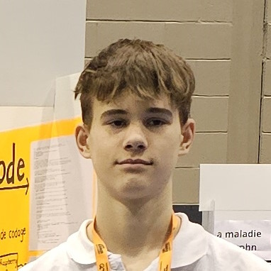
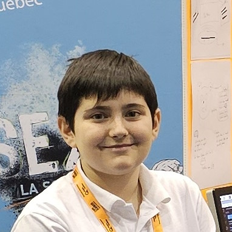

Notre équipe
Le projet ELIS (Toutou 3.0) est porté par deux étudiants passionnés de secondaire 2 :

Attis Felx
Attis, 13 ans, est un passionné de technologie et de programmation. Il a co-développé le Toutou 3.0 avec son ami Vincent.

Vincent Bélanger
Vincent, 13 ans, est un passionné de technologie et de programmation. Il a co-développé le Toutou 3.0 avec son ami Attis.

Vincent et Attis fièrement réunis devant leur projet lors de l'Expo-sciences régionale.
Nos collaborateurs
Le projet ELIS bénéficie également du soutien et de l'expertise de plusieurs collaborateurs :
- ü뮂Äçüíª Patrick B√©langer, expert en informatique et mentor du projet
- üè´ L'√©quipe p√©dagogique du Coll√®ge Saint-Bernard
- ü§ù Les partenaires techniques et financiers du projet
Notre motivation
En tant qu'étudiants de secondaire 2, nous avons à cœur de mettre nos compétences et notre créativité au service d'un projet utile et porteur de sens. Avec Toutou 3.0, nous souhaitons :
- üåü Montrer que la jeunesse est capable d'innovation et d'engagement
- üåç Contribuer √† rendre le monde meilleur, un enfant √† la fois
- üöÄ Inspirer d'autres jeunes √† croire en leurs r√™ves et √† se lancer dans des projets ambitieux